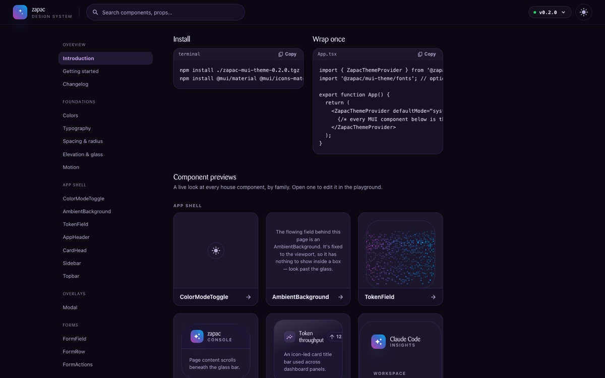
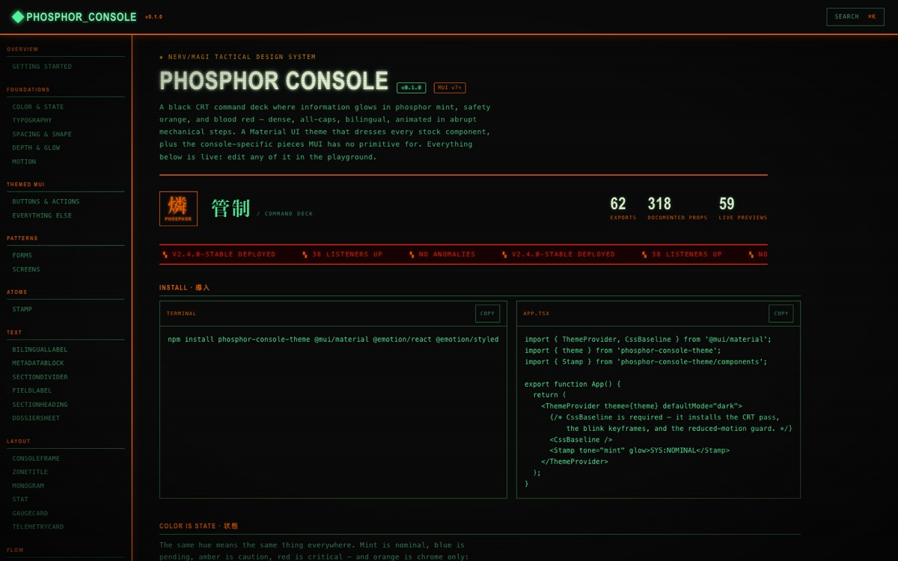

01乱
TEN LOOKS,
ONE PRODUCT
Ten prototypes, ten different looks. Different fonts, different buttons, different everything. Nobody chose that — it's just what happens when there's no default.
So the fun part would actually get used.
Ten prototypes, ten different looks — different fonts, different buttons, different everything. So the first thing I built wasn't the fun one. It was ZAPAC: one theme, on-brand, every time. Only once that held did Phosphor get to exist.
Ten prototypes, ten different looks. Different fonts, different buttons, different everything. Nobody chose that — it's just what happens when there's no default.
The boring part, built first: one theme, on-brand, every time. Not the thing I wanted to build — the thing that had to exist before anything else was worth building.
Not just my theme — one any dev on the team can run. Being on-brand stops being effort and starts being the default.
A second skin with a CRT glow — for the prototypes that get to feel fun, not just correct. Same system underneath, different face.
For the anime fans on the team, and anyone who remembers what a screen used to look like. The discipline is what earns you the toy.
From an Evangelion mood board to a production dark theme, in five stages. Every stage below still has its artefacts — pick a stage, then open the real thing.
A theme is a file someone has to remember to use. A skill is that same theme, taught to the agent — so staying on-brand stops taking effort. Both themes ship this way: run the skill, and the agent already knows the component library. ZAPAC for correct, Phosphor for fun.
Glass-over-gradient on the Zühlke purple→cyan identity.

COMPONENTS ↗/zapac-material-ui — what exists in the library, and when to reach for itNERV/MAGI tactical CRT command deck — colour is state.

COMPONENTS ↗/evangelion-mui-theme — the token set and the rules that keep it readableThe agent writes the code. Your job is deciding where it lives, and when it's ready to move. Every tracked contact on the plot is one agent, in one worktree, on one branch — isolated, parallel, and yours to land.
AI Agent writes the code, you move it. When code is cheap, your ability to manage and move it becomes more valuable.
Each worktree is an isolated copy of the entire repo, which makes parallel work with multiple agents possible.
Just ask the AI agent to do it for you. But know what git is capable of.